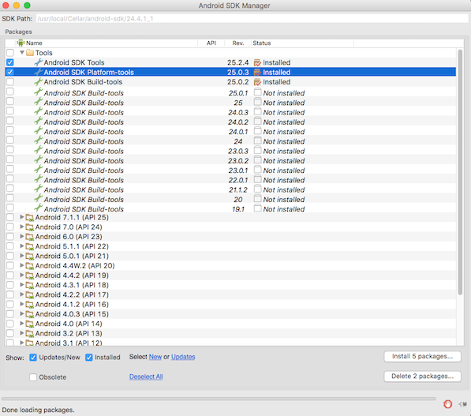
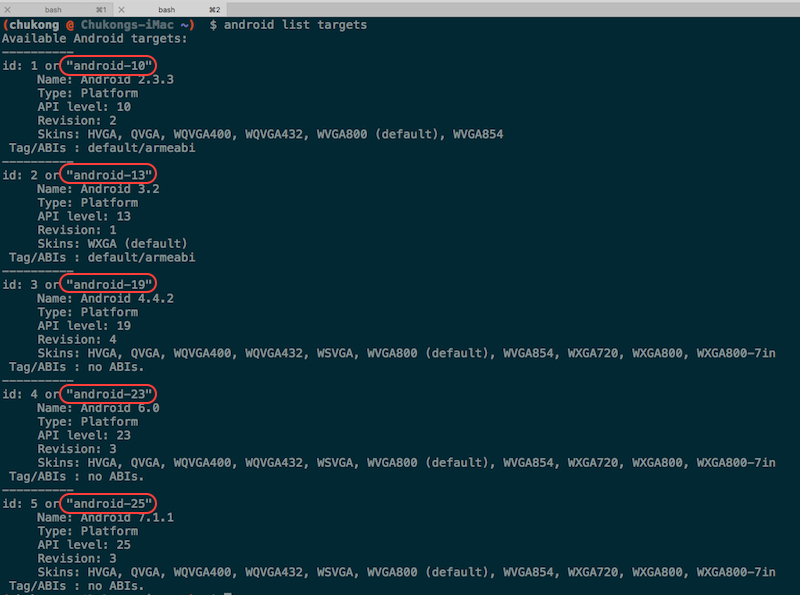

Android with Command-line Installation and Setup
Environment Requirements
A supported environment. See Installation Prerequisites
Starting decisions
Android development is a complicated beast. Not only are there several development environment options, each also requires several dependencies. These all need to be working before you can attempt to build a Cocos2d-x project. Read these steps a few times and take a few minutes to think about what workflow best suites you.
Prerequisites
Before we even talk about Cocos2d-x specific tasks, you need a working Android environment. This includes:
-
JDK/SDK 1.6+ http://www.oracle.com/technetwork/java/javase/downloads/index.html
-
Android NDK https://developer.android.com/tools/sdk/ndk/index.html
-
Apache Ant http://ant.apache.org/bindownload.cgi
-
Python 2.7.5 https://www.python.org/downloads/ NOT PYTHON 3
Your system may already have some of these items. Download the items that you need to inorder to have a complete environment. Nothing on this list can be missing.
OS X Instructions
Python
OS X systems come with Python installed by default. Verify that your system has Python and ensusre that it is a version less than 3. From Terminal.app or iTerm 2 execute the following:
> python --version
If you see output, such as:
Python 2.7.10
You are good to go. If you see anything else you may need to install Python. Use the link above. You cannot move on in this document until this step is working.
JAVA
OS X systems usually do not come with JAVA installed. It is necessary to download and install it using the link above. Make sure that you install the JDK. It is not enough to just install the JRE.

Once installed, it is necessary to set JAVA_HOME in your .bash_profile. Example:
export JAVA_HOME=$"(/usr/libexec/java_home -v 1.8)"
Once you are done with this step, re-source your .bash_profile: source ~/.bash_profile.
Now you can test that JAVA is available on your system:
> java -v
You should see some version info as output. Example:
java version "1.8.0_111"
Java(TM) SE Runtime Environment (build 1.8.0_111-b14)
Java HotSpot(TM) 64-Bit Server VM (build 25.111-b14, mixed mode)
If you see any of the following types of errors, the JDK is either not installed or is not accessible. Verify you have set JAVA_HOME. Example errors:
Unable to find any JVMs matching version "(null)".
Matching Java Virtual Machines (0):
No Java runtime present, requesting install.
Unable to find any JVMs matching version "(null)".
No Java runtime present, try --request to install.
If you are unsure, you can always execute /usr/libexec/java_home -V for a listing
of JAVA JDKs on your system. Example:
> usr/libexec/java_home -V
Matching Java Virtual Machines (1):
1.8.0_111, x86_64: "Java SE 8" /Library/Java/JavaVirtualMachines/jdk1.8.0_111.jdk/Contents/Home
/Library/Java/JavaVirtualMachines/jdk1.8.0_111.jdk/Contents/Home
Apache Ant
Apache Ant is another required tool. It is not installed on an OSX system by default. It is neccessary to download it using the link above. Using a binary distribution is fine. There is no need to download the source and compile by hand unless this is your preferred method.
After downloading, unzip the Apache Ant archive. You only need to place the Apache Ant folder someplace in your $PATH and then set an $ANT_ROOT environment variable in your .bash_profile. Exactly the same way $JAVA_HOME was added above. Example, if your Apache ANT folder is named apache-ant-1.10.0:
export ANT_ROOT=/Applications/Cocos/tools/ant/bin
export PATH=$ANT_ROOT:$PATH
Android NDK and SDK
Obviously, you need the Android NDK and SDK to do Android development. These are not installed on an OSX system by default. It is neccessary to download it using the link above.
Brew
Using brew is one option for installing the Android NDK and SDK. Installing with brew makes the installation simple. A single command, a few environment variables and you are done. Example:
brew install android-ndk android-sdk
This will take a while to complete. Once it is done, you need to set a few envorinment variables in your .bash_profile.
export NDK_ROOT=/usr/local/Cellar/android-ndk/r12b
export PATH=$NDK_ROOT:$PATH
export ANDROID_HOME=/usr/local/opt/android-sdk
export ANDROID_SDK_ROOT=/usr/local/Cellar/android-sdk/24.4.1_1
export PATH=$ANDROID_SDK_ROOT:$PATH
export PATH=$ANDROID_SDK_ROOT/tools:$ANDROID_SDK_ROOT/platform-tools:$PATH
Make sure to re-source your .bash_profile!
Installing manually.
If you choose not to use brew you can still download and install the Android NDK and SDK by hand. After downloading, set the same environment variables as above, but using your custom paths. For example, if you downloaded the Android NDK and SDK to ~/Projects/:
export NDK_ROOT=/Users/username/Projects/android-ndk/r12b
export PATH=$NDK_ROOT:$PATH
export ANDROID_HOME=/Users/username/Projects/android-sdk
export ANDROID_SDK_ROOT=/Users/username/Projects/android-sdk/24.4.1_1
export PATH=$ANDROID_SDK_ROOT:$PATH
export PATH=$ANDROID_SDK_ROOT/tools:$ANDROID_SDK_ROOT/platform-tools:$PATH
Installing additional Android SDKs
Depending upon what Android OS versions you wish to target, you may need to install additional Android SDKs to cover those OS versions. As Android SDKs evolve, sometimes older OS suppot is dropped. This means that your game might not be able to target older devices. This is a personal decision on the part of the game developer.
If you wish to install additional Android SDKs, use the built in android GUI tool to install whatever you need. Example:
> android

It is only necessary to install the Android SDK Tools for each release you want installed on your system. It is always a good idea to update the Android SDK Platform-Tools when a new version becomes available.

Cocos2d-x
Installing Cocos2d-x is probably the easiest part of this process. You can get started with Cocos2d-x by either downloading a self-contained .zip from the website or by cloning our GitHub Repo. Pick what works for you. There is no need to do both.
By downloading a .zip archive
Download Cocos2d-x and unzip it. (maybe: ~/ or ~/Projects )

Cloning from GitHub
Use the following commands to clone our GitHub repo and get your environment setup. If you are not familar with GitHub's workflow, learn it or download using the step above, By downloading a .zip archive.
cd <to where you want to clone this repo>
git clone git@github.com:cocos2d/cocos2d-x.git
git submodule update --init
git submodule update
./download-deps.py
Making sure you are ready to create the next hit game!
Next, you are ready to build cpp-tests. It is a good idea to perform this step before starting a new project. It ensures that your environment is setup completely. If anything fails during this step, it is important to read the error message carefully and re-visit the step above that is related to the error message you see.
Change your directory to the where the android-build.py script is located. (usually Cocos2d-x/build). To see what targets are available. run:
> android list targets

Now you can execute the command to build:
> python android-build.py -p <target # from above> cpp-tests
Everything should build successfully!

Starting a new project
Once everything above works, you can start a new project! To do this, read our document on the Cocos Command-line tool.
How to deploy it on your Android phone via command line
Enable USB Debugging on your phone and then connect your phone via USB.
Change your directory to the the bin directory of your android project
Use adb to install the .apk to your Android phone by executing:
> adb install MyGame-debug.apk